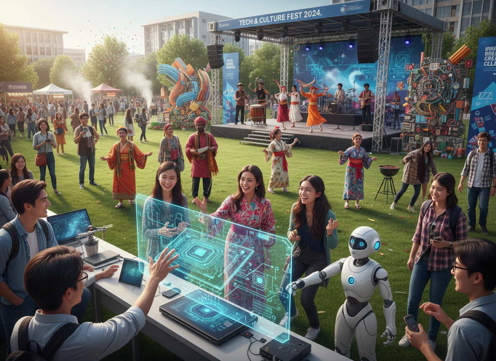
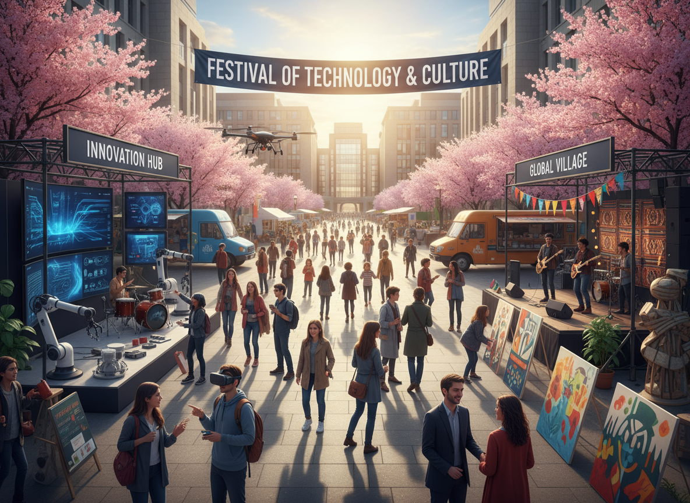
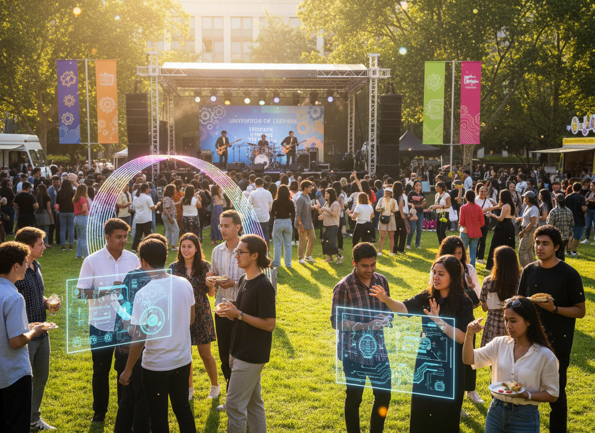
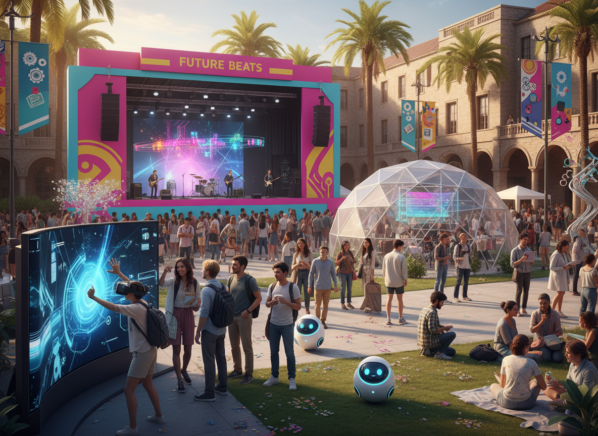
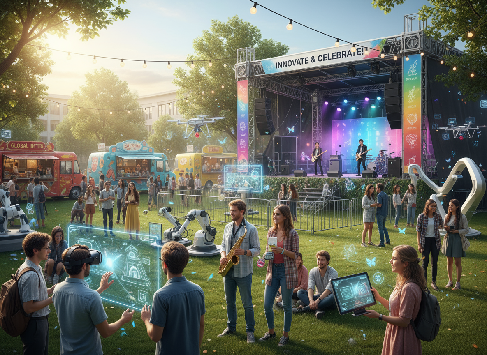

Festival Universitário de Tecnologia e Cultura - FUTC
Onde inovação encontra expressão criativa, unindo tecnologia, arte e cultura universitária.
Sobre o Festival
O Festival Universitário de Tecnologia e Cultura reúne estudantes, professores e criadores em um espaço de troca, aprendizado e inovação. O evento celebra o encontro entre ciência e arte, promovendo palestras, oficinas e apresentações culturais.
Apresentação
O Festival Universitário de Tecnologia e Cultura tem como missão promover a integração entre tecnologia e arte, estimulando a criatividade e a inovação entre os participantes.
Durante o evento, estudantes e profissionais compartilham experiências que inspiram novas ideias e fortalecem a comunidade acadêmica. A criatividade é o motor da tecnologia.
Notícias
Incrições abertas para oficinas de inovação
As oficinas de FUTC 2025 já estão com inscrições abertas! Os participantes poderão explorar temas como robótica, inteligência artificial e design digital.
Como disse a inovação é a chave para o futuro, reforçando o espírito do festival. Revista Tecnologia Universitária
Keynote com especialista em cultura digital
O evento contará com a presença do renomado especialista em cultura digital, Dr. João Silva, que abordará as tendências tecnológicas e seu impacto na sociedade.
De acordo com Dr. João Silva a cultura digital é um reflexo da sociedade contemporânea e suas transformações.
Programação
Abertura com keynote sobre inovação e cultura digital
Hackathon 24h: soluções para o campus
Oficinas de IA, Python e UX
Mostra de arte digital e exposições
Game Jam e desafio de robótica
Encerramento com bandas universitárias
Programação
Passos para credenciamento
Realize sua inscrição no site oficial do FUTC.
Apresente seu comprovante de matrícula na entrada do evento.
Retire seu crachá e kit de participante no balcão de credenciamento.
Dirija-se ao auditório principal para a cerimônia de abertura.
Infraestrutura disponível
Estandes de inovação e startups.
Auditórios com projeção 3D.
Laboratórios de robótica e realidade virtual.
Área gastronômica com food trucks sustentáveis.
Glossário de Festival
IA
IA - Campo da tecnologia que cria sistemas capazes de aprender e resolver problemas.
UX
UX - Área voltada para melhorar a experiência do usuário em produtos e serviços digitais.
Maker
Movimento cultural que incentiva pessoas a criar e consertar objetos por conta própria, usando ferramentas tecnológicas.
Grade do Evento
Programação de Palestras e Oficinas do FUTC 2025
Horário
Trilha
Palestra / Oficina
Palestrante
09:00 - 10:30
Tecnologia
Inteligência Artificial no Cotidiano
Profa. Jennie Hoffmann
Cultura
Arte Digital e Realidade Aumentada
Prof. Damon Salvatore
11:00 - 12:30
Inovação
Painel conjunto: Criatividade e Sustentabilidade
14:00 - 15:30
Empreendedorismo
Startups Universitárias
Equipe do LabTech
16:00 - 17:30
Robótica
Desafio Maker: construindo um robô autônomo
Profa. Katherine Pierce
Total de Sessões: 5
Galeria
Confira algumas imagens do evento:

Apresentações culturais e tecnológicas encantam o público com robôs e hologramas interativos.

Visitantes explorando o festival entre estandes de inovação e arte sob as flores de cerejeira.

Experiências imersivas, realidade virtual e música eletrônica o Future Beats Stage.

Estudantes interagem com robótica, experimentos digitais e bandas ao vivo no gramado do campus.

Clima descontraído e troca de ideias entre jovens durante o show principal do festival.